Evolución Estelar I: vida y muerte de las estrellas de baja masa
Cuánto viven las estrellas y por qué la masa lo decide todo. El reloj del punto de turn-off para fechar cúmulos, y el camino completo de una estrella tipo Sol: gigante roja, flash de helio, cebolla de capas, nebulosa planetaria y enana blanca.
Las estrellas no son eternas: son máquinas térmicas con un tanque de combustible finito. Esta clase abre el módulo de evolución estelar respondiendo tres preguntas encadenadas: ¿cuánto tiempo vive una estrella?, ¿cómo cambia cuando se le acaba el hidrógeno del núcleo?, y ¿qué queda cuando muere? La respuesta a las tres depende de un solo parámetro dominante: la masa. Aquí nos concentramos en las estrellas de hasta ~4 masas solares —como el Sol—, que terminan sus días expulsando sus capas como nebulosa planetaria y dejando una enana blanca. Las más masivas quedan para la próxima clase.
Repaso: el diagrama de Hertzsprung-Russell
El mapa donde ocurren todos los capítulos de la vida estelar.
El diagrama H-R relaciona la temperatura superficial (o el tipo espectral, o el color) con la luminosidad (o la magnitud absoluta) de las estrellas. Cada punto es una estrella. Cuando graficamos una muestra grande, la mayoría cae sobre una diagonal —la secuencia principal— que va desde estrellas calientes y luminosas (tipos O, B) hasta estrellas frías y débiles (tipo M).
Una estrella está en la secuencia principal si y solo si está fusionando hidrógeno en helio en su núcleo. Si el hidrógeno se fusiona en otro lado (por ejemplo, en una capa alrededor del núcleo), ya no es secuencia principal. Esta definición es la llave de toda la clase.
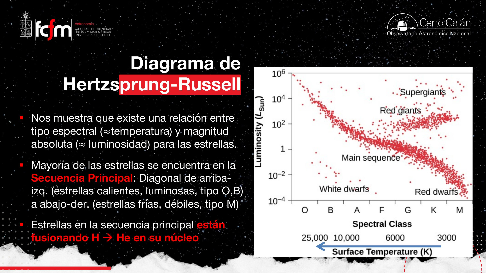
Clases de luminosidad
Además del tipo espectral (O, B, A, F, G, K, M, cada letra subdividida de 0 a 9), las estrellas se clasifican por clase de luminosidad: enana (secuencia principal), gigante, supergigante, enana blanca. El nombre confunde —puedo tener enanas y gigantes con luminosidades parecidas—, pero es la nomenclatura histórica para distinguir en qué etapa de su vida está la estrella.
La profesora mostró un video del cúmulo globular Omega Centauri (uno de los más masivos de la Vía Láctea; se sospecha que es el núcleo de una galaxia que la nuestra se tragó, y se busca allí un agujero negro central). Al ordenar sus estrellas por color y luego por brillo, el diagrama H-R «aparece mágicamente»: secuencia principal, gigantes rojas, rama horizontal azul y enanas blancas. Un diagrama H-R no es más que eso: ordenar una población estelar por color y por magnitud.
El diagrama H-R es un scatter plot de dos features observables (color, magnitud) en el que las etapas evolutivas emergen como clusters. Y como en todo dataset real, hay contaminación: al observar un cúmulo se cuelan objetos de la línea de visión (sobre todo galaxias de fondo, rojas y débiles) que hay que filtrar antes de interpretar — limpieza de datos antes del análisis.
La relación masa–luminosidad
Más masa ⇒ más presión ⇒ más temperatura ⇒ más fusión ⇒ más brillo.
Para estrellas de secuencia principal —y solo para ellas— existe una correlación empírica entre masa y luminosidad:
La cadena causal que la explica es puro equilibrio hidrostático:
- Más masa ⇒ más peso que sostener ⇒ se necesita más presión para mantener a la estrella en equilibrio (para que «siga siendo una pelota»).
- Más presión ⇒ más temperatura, particularmente en el núcleo.
- Más temperatura ⇒ mayor tasa de fusión nuclear (más reacciones termonucleares por segundo).
- Más reacciones ⇒ más energía liberada por unidad de tiempo ⇒ más luminosidad (la luminosidad es energía por segundo).
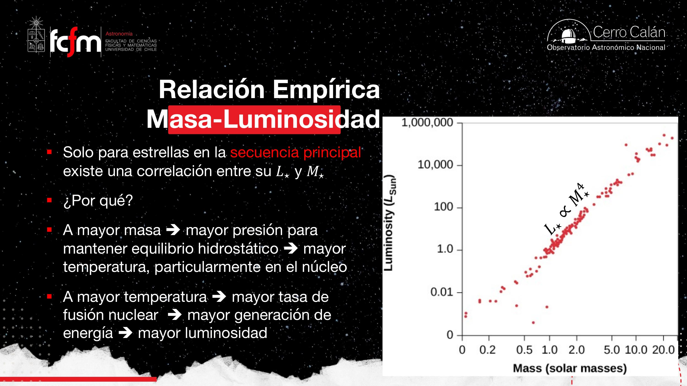
Consecuencia inmediata: como mayor luminosidad implica mayor masa, la secuencia principal del diagrama H-R también ordena a las estrellas por masa. Arriba (brillantes): las masivas, hasta ~60 M☉ en el gráfico de la clase. Abajo (débiles): las menos masivas.
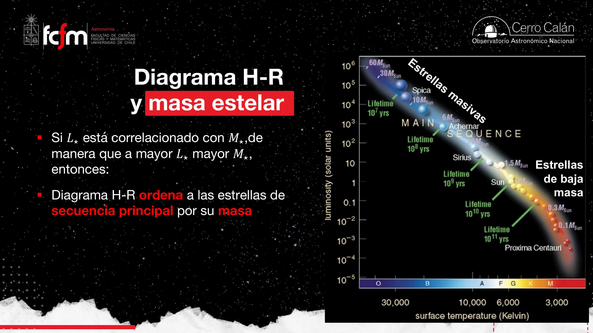
L ∝ M⁴ es una ley de potencia: en log-log es una recta de pendiente 4. Duplicar la masa multiplica el brillo por 16. Este tipo de escalamiento no lineal es el mismo que aparece en complejidad de algoritmos (O(n⁴)): crecimientos pequeños de la entrada disparan el consumo del recurso — aquí, el combustible nuclear.
El tiempo de vida de una estrella
Tanque de combustible dividido por tasa de consumo.
Definimos tiempo de vida como el tiempo que la estrella puede brillar con su luminosidad actual generando energía por fusión de hidrógeno en el núcleo. Es decir, es el tiempo en la secuencia principal —que de todas formas es ~90% de la vida total de la estrella, así que es una excelente aproximación.
Como la cantidad de hidrógeno de una estrella escala con su masa total, podemos aproximar:
Dos ejemplos de la clase
- Estrella masiva (10 M☉, como Spica): del diagrama H-R, L ≈ 10⁴ L☉. Tiene 10 veces más combustible pero lo quema 10.000 veces más rápido ⇒ años. Diez millones de años: mucho para nosotros, poquísimo para una estrella. Son las estrellas «rockeras» que viven rápido y mueren jóvenes.
- Estrella de baja masa (0.1 M☉, una enana roja): L ≈ 10⁻² L☉. Tiene 10 veces menos combustible pero lo consume 100 veces más lento ⇒ años. ¡Más que la edad actual del universo! Por eso se dice que las enanas rojas serán la última luz del universo.
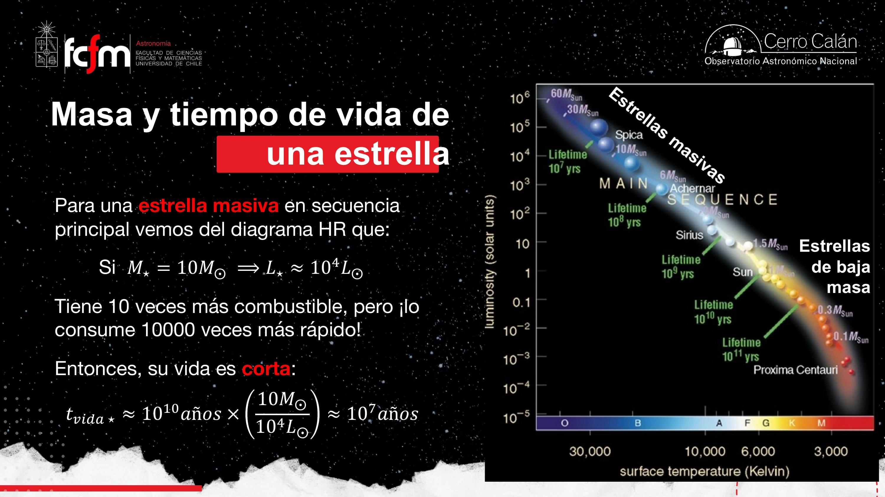
Las estrellas masivas son como una camioneta F-150 bencinera: tanque grande pero consumo brutal. Las enanas rojas son el Suzuki Celerio petrolero: tanque chico, consumo mínimo, autonomía fantástica. Además las enanas rojas son completamente convectivas: se «revuelven» enteras, así que el hidrógeno de las capas externas eventualmente llega al núcleo y también se quema. En el Sol no: el H externo nunca baja al núcleo (el Sol es radiativo por dentro, convectivo solo desde ~70% del radio hacia afuera, con la tacoclina como zona de transición). Doble ventaja de eficiencia para las enanas rojas.
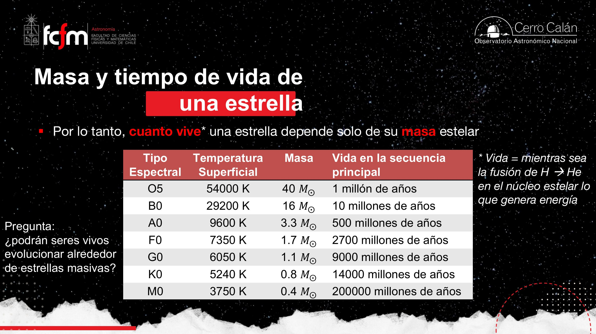
En la Tierra, la primera vida (microbiana) apareció hace ~3.800 millones de años y necesitó otros ~3.800 millones para llegar a nosotros. Una estrella O5 vive 1 millón de años en secuencia principal: no hay tiempo para que evolucione vida como la que conocemos. Instituciones como el Instituto SETI exploran alternativas (¿vida basada en silicio?), pero buscamos lo que conocemos porque es lo único que sabríamos reconocer.
Fechar cúmulos estelares: el punto de turn-off
La secuencia principal como reloj de arena.
Un cúmulo es un grupo de estrellas que se formaron juntas (coetáneas, dentro de un margen). Eso lo convierte en un laboratorio perfecto: misma edad, misma composición inicial, pero masas distintas. Y como las masivas mueren primero, el diagrama H-R del cúmulo evoluciona de forma predecible:
- Cúmulo joven: todas las estrellas están en la secuencia principal ⇒ se ve la diagonal completa.
- Pasa el tiempo: las más masivas agotan su combustible y salen de la secuencia principal ⇒ se forma un «codito»: el punto de turn-off.
- Cúmulo viejo: el turn-off baja, porque ya están saliendo estrellas cada vez menos masivas.
Regla práctica: turn-off más abajo ⇒ cúmulo más viejo. La edad del cúmulo es, esencialmente, el tiempo de vida de las estrellas que están justo en el codo.
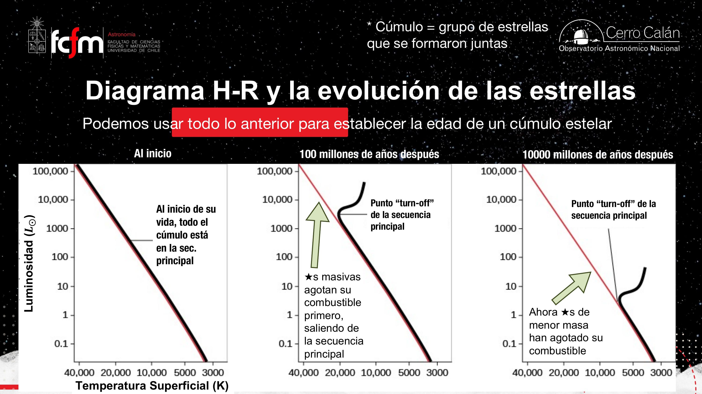
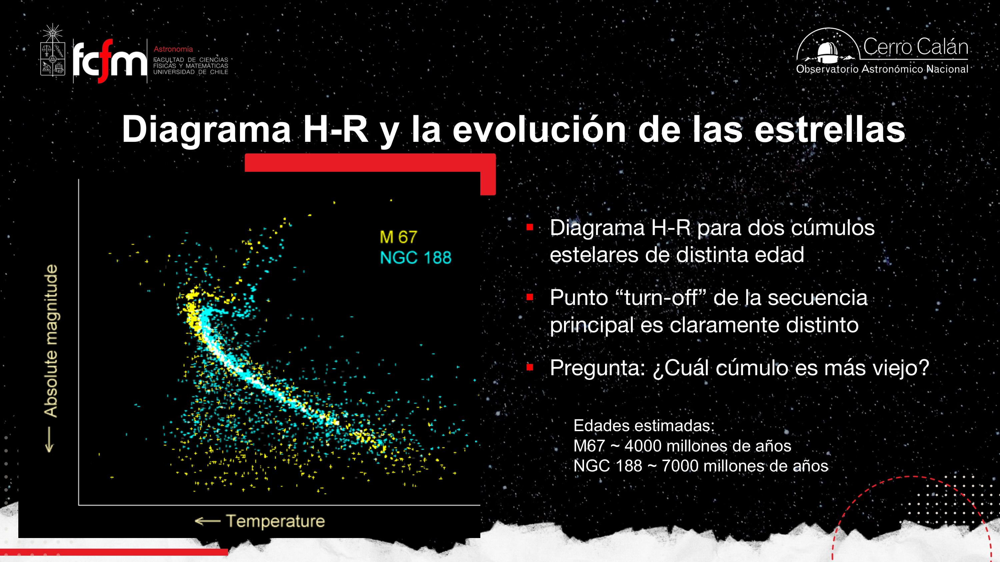
Isócronas
Una isócrona (iso = igual, crono = tiempo) es la curva que marca dónde debería estar en el diagrama H-R cada estrella de cada masa si todas tuvieran la misma edad. No es el camino evolutivo de una estrella: es una captura instantánea —un timestamp— de toda la población. Ajustar isócronas a los datos de un cúmulo es el método estándar para medirle la edad.
Isócrona vs. camino evolutivo es la clásica distinción entre snapshot y trayectoria: una isócrona es un corte transversal del sistema en t fijo (como el estado de todos los procesos en un instante), mientras que el track evolutivo es la serie temporal de un solo objeto. Confundirlos es como confundir un profile dump con un trace.
La profesora mostró fotometría de Omega Centauri (trabajo de Sandro Villanova, con bandas de un telescopio espacial, probablemente Hubble) donde se distinguen secuencia principal, turn-off, rama de las gigantes rojas, subgigantes, rama asintótica, rama horizontal azul y enanas blancas. El cúmulo tiene casi la edad de la galaxia (del orden de 12.000 millones de años).
Vida en la secuencia principal (M ≲ 4 M☉)
Equilibrio… con una deriva lenta que ya afecta al Sol.
Desde aquí la clase se restringe a estrellas de hasta ~4 masas solares. En secuencia principal, la estrella está en equilibrio hidrostático (presión vs. gravedad) y equilibrio térmico, con pequeñas variaciones (campos magnéticos, llamaradas). Eso permite tratar su gas con la ley de los gases ideales:
El truco de contar partículas
La cadena protón-protón convierte 4 núcleos de hidrógeno en 1 de helio (con 2 protones devueltos en el proceso, pero el balance neto sigue siendo perder partículas). Entonces, mientras la estrella fusiona, el núcleo estelar va quedando con menos partículas: N baja. Siga la cadena:
- N baja, pero la presión P debe mantenerse (equilibrio hidrostático: hay que seguir sosteniendo el peso de la estrella).
- Para compensar, las partículas deben moverse más rápido ⇒ la temperatura del núcleo sube gradualmente.
- Más temperatura ⇒ más choques ⇒ sube la tasa de fusión ⇒ sube la luminosidad.
- Esa energía extra empuja hacia afuera ⇒ la estrella se expande ligeramente durante la secuencia principal.
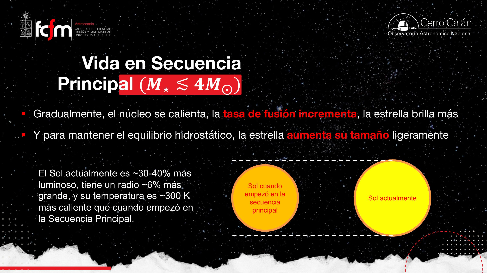
Es un lazo de control con retroalimentación: la variable de proceso (presión) debe seguir una referencia fijada por la gravedad; la «planta» compensa la pérdida de partículas subiendo temperatura. El sistema es estable pero con drift secular del punto de operación — como un controlador que compensa el envejecimiento de un componente hasta que el actuador se queda sin rango.
Se agota el H del núcleo: subida a gigante roja
El motor central se apaga, pero se enciende una cáscara.
El hidrógeno que la estrella puede usar es solo el del núcleo. Cuando se acaba, no hay más fusión central, y sin fusión no hay presión que sostenga el peso de las capas superiores:
- El núcleo (ahora de helio, inerte) se contrae por gravedad.
- La contracción sube temperatura y presión del núcleo y sus alrededores… pero no lo suficiente para fusionar helio: el H fusiona a ~15 millones de K (centro del Sol); el He necesita ~100 millones de K.
- El calentamiento sí basta para encender una capa de fusión de H→He justo afuera del núcleo — la primera «capita de la cebolla» — con una tasa de fusión incluso mayor que antes.
- Esa cáscara genera energía desde una posición más externa ⇒ empuja e infla las capas exteriores.
- El núcleo sigue contrayéndose (nada lo detiene) ⇒ más temperatura ⇒ más fusión en la cáscara ⇒ gran aumento de luminosidad.
- Las capas externas, ahora lejísimos del núcleo, se enfrían y enrojecen ⇒ nace la gigante roja.
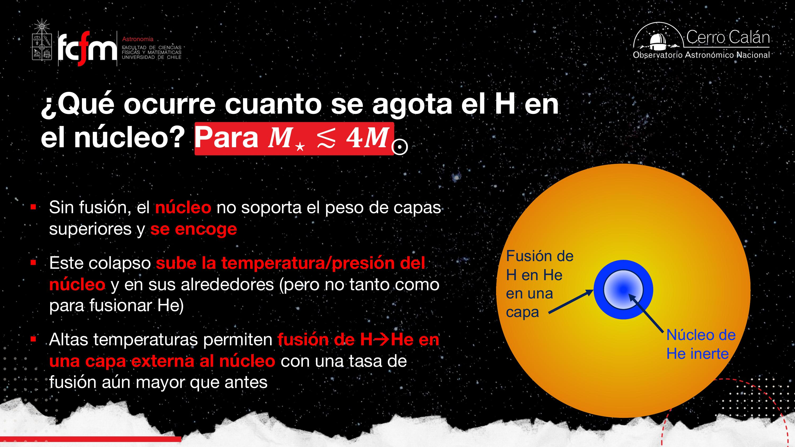
¿Por qué sube tanto el brillo si la superficie se enfría? Por la ley de Stefan-Boltzmann:
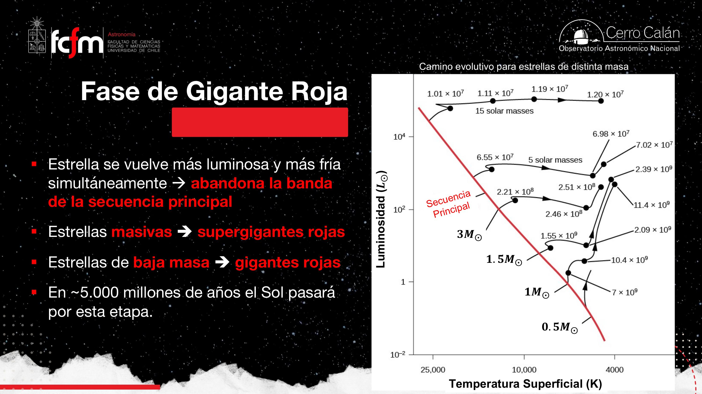
Cuando al Sol le toque (en ~5.000 millones de años), se expandirá hasta un diámetro de ~2 UA — según los modelos, engullendo la órbita terrestre y llegando aproximadamente hasta la órbita de Marte. Júpiter pasará a ser un «hot Jupiter». La subida de secuencia principal a gigante roja es rapidísima en términos astronómicos (menos de un millón de años): por eso casi no observamos estrellas «en plena subida» — hay que pillarlas justo.
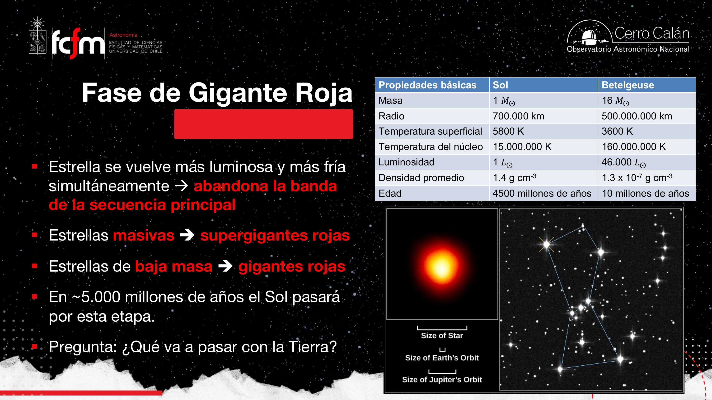
Una nueva fuente de energía: fusión de helio
El proceso triple-alfa fabrica el carbono del que estamos hechos.
Durante la fase de gigante roja, el núcleo de helio sigue comprimiéndose hasta alcanzar los 100 millones de K. ¿Por qué tanto? Un núcleo de tiene 2 protones y 2 neutrones: el doble de carga que el hidrógeno, o sea una repulsión electrostática mucho mayor que vencer. (Recordar que la estrella es plasma: núcleos desnudos y electrones libres dando vueltas. Al núcleo de helio también se le llama partícula alfa — la misma de los experimentos históricos de Rutherford con láminas de oro.)
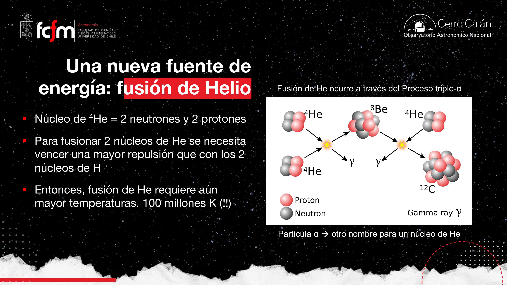
Mientras tanto, la capa de fusión de hidrógeno sigue activa y va «alimentando» el núcleo con helio fresco, ayudando a sostener la nueva fusión central. La estructura de cebolla comienza a formarse.
Presión degenerada de electrones y el flash de helio
Donde la física «normal» se acaba y entra la mecánica cuántica.
Al encenderse la fusión de He, el núcleo se calienta muchísimo, pero su presión térmica venía débil (el núcleo venía colapsando, y una estrella inflada es más inestable: no basta con equilibrarse, primero hay que frenar el colapso). ¿Qué detiene el colapso entonces? Un efecto cuántico: la presión degenerada de electrones.
La analogía del estacionamiento
El principio de exclusión de Pauli prohíbe que dos electrones ocupen el mismo estado cuántico en el mismo lugar. A densidades normales eso no molesta: es como estacionar en el mall un martes de julio — hay espacio de sobra, te ubicas donde quieras, sin estrés. Pero a las densidades extremas del núcleo de una gigante roja, es el mall un 23 de diciembre: todos los espacios de baja energía están ocupados, y los electrones se ven obligados a ocupar estados de mayor energía no porque estén más calientes, sino porque no hay otro lugar donde meterse. Esa ocupación forzada genera presión: presión de degeneración.
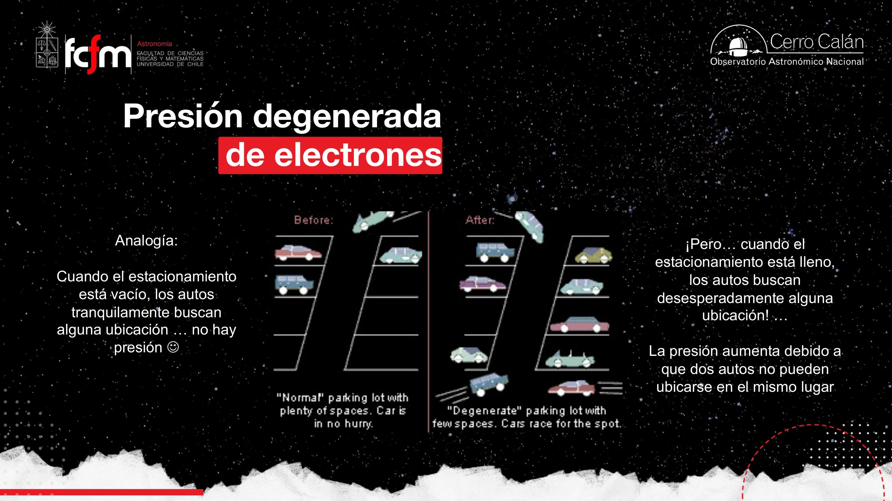
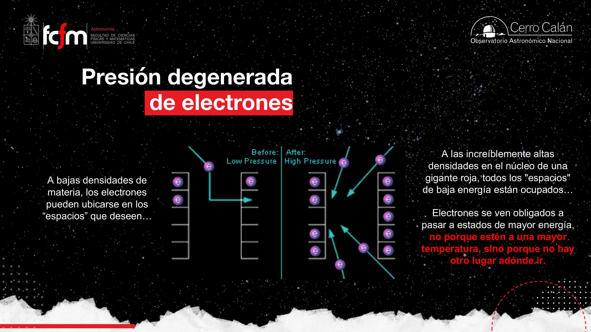
La olla a presión: el flash
Aquí está la clave del flash de helio. En un gas normal, encender fusión sube la temperatura, sube la presión, el núcleo se expande, se enfría y la reacción se autorregula (termostato natural). Pero en materia degenerada:
- Sube la temperatura por la fusión de He… pero la presión no responde (la controla la densidad, no la temperatura).
- Sin aumento de presión, el núcleo no se expande ni se enfría — es una olla a presión sin válvula.
- Más temperatura ⇒ más fusión ⇒ más temperatura ⇒ … la tasa de fusión se dispara.
- Todo el helio del núcleo se enciende prácticamente a la vez: una inyección de energía gigantesca y muy breve. Eso es el flash de helio.
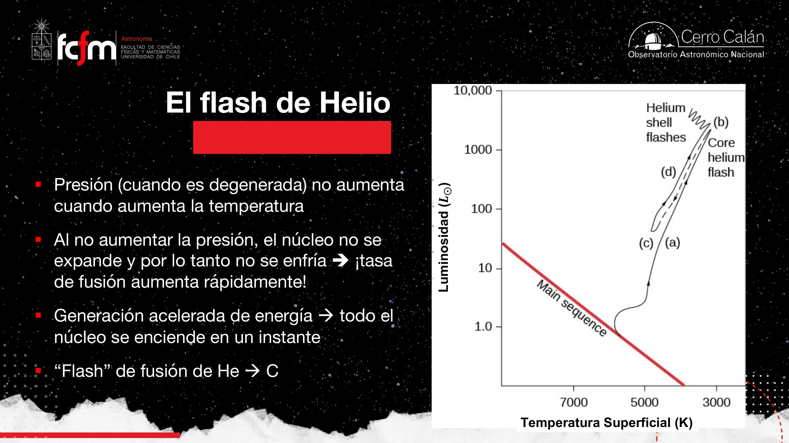
Tras el flash, el núcleo completo queda fusionando He→C de forma ordenada. La estructura interna se reacomoda: sube la temperatura superficial, baja un poco la luminosidad (las capas infladas se recogen y el área emisora disminuye), y la estrella encuentra un nuevo equilibrio hidrostático y radiativo. Paz temporal.
El flash de helio es un runaway térmico por pérdida del lazo de retroalimentación negativa: en el gas ideal, presión-expansión-enfriamiento actúa como regulador; la degeneración «desconecta el sensor» (P deja de responder a T) y el sistema pasa a retroalimentación positiva pura hasta saturar. Igual que un thermal runaway en una batería o un proceso sin backpressure.
La cebolla final: núcleo inerte de carbono y oxígeno
Hasta aquí llega el motor de una estrella de baja masa.
El helio del núcleo también se agota. El carbono recién formado a veces captura otro núcleo de helio y forma oxígeno — otro elemento esencial que nace dentro de estrellas. Cuando el He central se acaba, queda un núcleo inerte de carbono (y oxígeno), y la historia se repite:
- El núcleo de C-O, sin fusión, se contrae.
- La estrella se expande otra vez: sube la luminosidad, baja la temperatura superficial. Es el segundo episodio de inflación (el primero fue con el núcleo de He inerte).
- Pero esta vez no hay próximo capítulo: para fusionar carbono se necesitan temperaturas que una estrella de ≤4 M☉ jamás alcanzará, por más que se contraiga. La fuente de energía se terminó.
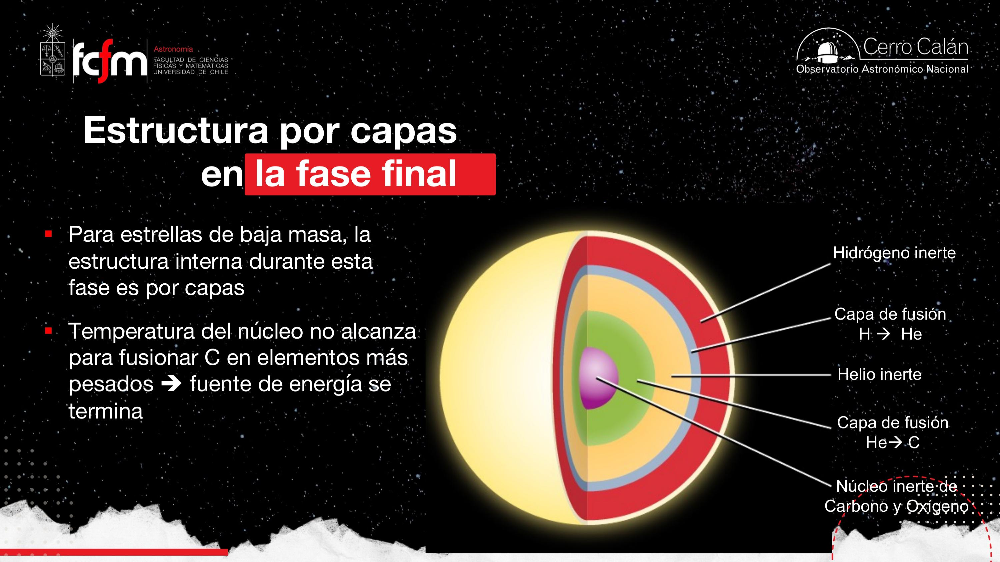
Cada elemento sucesivo tiene más protones ⇒ más repulsión coulombiana ⇒ exige más temperatura para fusionar. H: 15 millones de K. He: 100 millones. El carbono exige aún más, y la contracción gravitacional de un núcleo de ≤4 M☉ no da para tanto. La masa de la estrella fija hasta qué elemento de la tabla periódica llega su fábrica. Con más masa se sube más alto en la tabla — tema de la próxima clase.
Muerte: nebulosa planetaria y enana blanca
La estrella devuelve al medio interestelar los metales que fabricó.
¿Cómo termina? Sin supernova. Las estrellas de baja masa mueren con más elegancia:
- Las capas externas de estas estrellas son convectivas: se revuelven y van subiendo hacia la superficie los metales (para el astrónomo, todo lo que no es H ni He) fabricados durante la vida de la estrella.
- La presión de radiación, la energía remanente del flash de helio, las pulsaciones estelares y otros fenómenos de las capas externas —donde además la gravedad es débil— terminan de expulsar el material al espacio.
- Ese material expulsado, brillando alrededor del núcleo desnudo, es la nebulosa planetaria — que nada tiene que ver con planetas: el nombre es un error histórico que nadie corrigió.
- En el centro queda el núcleo inerte de C-O al desnudo: la enana blanca, que se enfría lentamente durante miles de millones de años. Es un cadáver estelar (como lo son también las estrellas de neutrones y los agujeros negros, para estrellas más masivas).
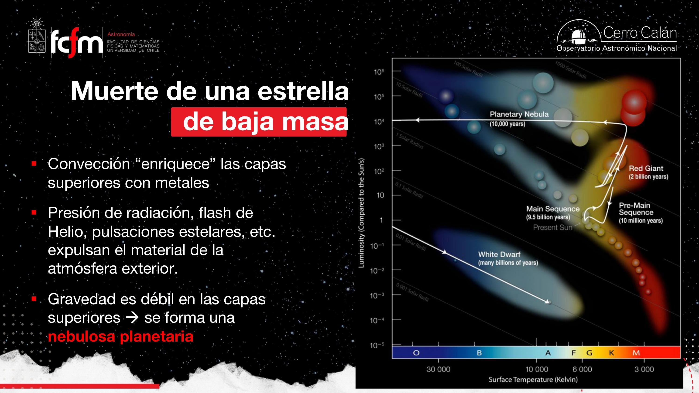
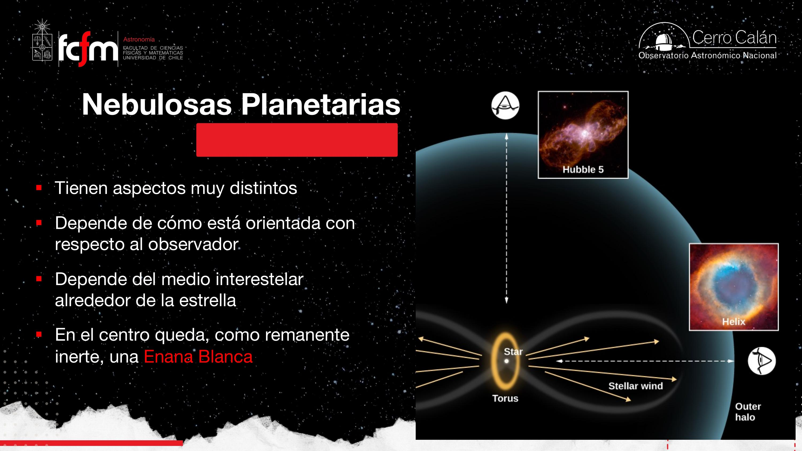
Al expulsar sus capas, la estrella enriquece el medio interestelar con carbono, oxígeno y otros metales, que pasarán a formar parte de nuevas estrellas y sistemas planetarios. Nosotros somos, literalmente, producto de ese reciclaje. Los elementos más pesados requieren otros procesos (próximas clases).
¿Qué pasa con estrellas de más de 4 M☉? Alcanzan temperaturas para fusionar carbono y elementos más pesados, generan otros elementos químicos y mueren de forma mucho más violenta (supernovas, estrellas de neutrones, agujeros negros — que dependen de la masa del núcleo, no de la masa total). También veremos la presión degenerada de neutrones.
Explorar conceptos
Tres widgets para jugar con las ideas de la clase.
Conceptos clave
Tabla de repaso rápido.
| Concepto | Qué es / valor | Por qué importa |
|---|---|---|
| Secuencia principal | Fusión de H→He en el núcleo | Define la «vida adulta»; ~90% de la vida de la estrella |
| Clases de luminosidad | Enana, gigante, supergigante, enana blanca | Etiquetan la etapa evolutiva (no solo el brillo) |
| Masa–luminosidad | (solo secuencia principal) | La secuencia principal ordena a las estrellas por masa |
| Tiempo de vida | ; Sol ≈ 10¹⁰ años | Masivas viven 10⁶–10⁷ años; enanas rojas hasta 10¹¹ |
| Punto de turn-off | El «codo» donde las estrellas dejan la secuencia principal | Reloj para fechar cúmulos (M67 ~4.000, NGC 188 ~7.000 mill. años) |
| Isócrona | Curva de igual edad en el H-R para todas las masas | Snapshot (no trayectoria); método estándar de datación |
| Gas ideal + menos partículas | 4H → 1He baja N en PV = NkBT | Explica la lenta subida de T, L y R durante la secuencia principal |
| Gigante roja | Núcleo He inerte + cáscara de fusión de H | Más luminosa (L = 4πR²σT⁴, gana el área) pero más fría |
| Proceso triple-α | 3 ⁴He → ¹²C (vía ⁸Be inestable), a ~10⁸ K | Origen del carbono; el C + He forma oxígeno |
| Presión degenerada | Presión por exclusión de Pauli: depende de densidad, no de T | Detiene el colapso del núcleo; rompe la ley de gases ideales |
| Flash de helio | Encendido explosivo de todo el He del núcleo | Runaway porque el núcleo degenerado no puede expandirse y enfriarse |
| Nebulosa planetaria | Capas externas expulsadas (nada que ver con planetas) | Enriquece el medio interestelar con metales |
| Enana blanca | Núcleo inerte de C-O al desnudo | El cadáver de las estrellas de baja masa; se enfría para siempre |
| Temperaturas de fusión | H: ~15×10⁶ K · He: ~10⁸ K · C: inalcanzable si M ≲ 4 M☉ | La masa fija hasta qué elemento llega la fábrica estelar |
Exámenes de práctica
10 exámenes de 5 preguntas (3 de alternativas autocorregibles + 2 de respuesta escrita).